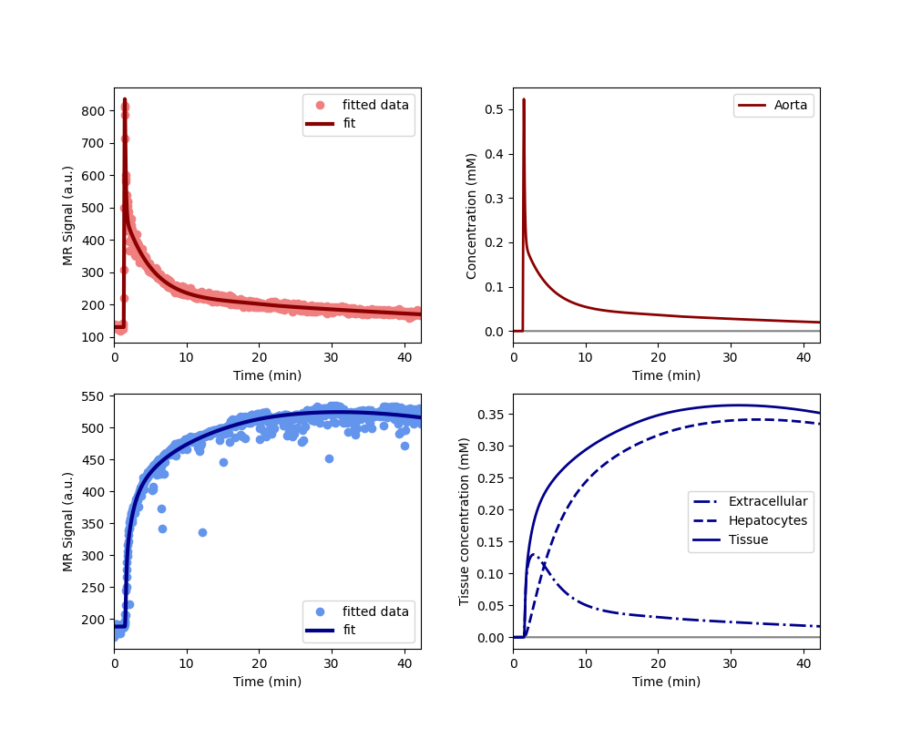
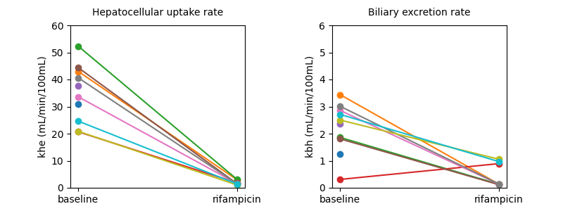

Note
Go to the end to download the full example code.
Clinical - rifampicin induced inhibition (short protocol)#
This example illustrates the use of AortaLiver for joint fitting of
aorta and liver signals to a whole-body model. The use case is provided by the
liver work package of the
TRISTAN project which develops imaging
biomarkers for drug safety assessment. The data and analysis was first
presented at the ISMRM in 2024 (Min et al 2024, manuscript in press).
The data were acquired in the aorta and liver of 10 healthy volunteers with dynamic gadoxetate-enhanced MRI, before and after administration of a drug (rifampicin) which is known to inhibit liver function. The assessments were done on two separate visits at least 2 weeks apart.
The research question was to what extent rifampicin inhibits gadoxetate uptake rate from the extracellular space into the liver hepatocytes (khe, mL/min/100mL) and excretion rate from hepatocytes to bile (kbh, mL/100mL/min).
2 of the volunteers only had the baseline assessment, the other 8 volunteers completed the full study. The results showed consistent and strong inhibition of khe (95%) and kbh (40%) by rifampicin. This implies that rifampicin poses a risk of drug-drug interactions (DDI), meaning it can cause another drug to circulate in the body for far longer than expected, potentially causing harm or raising a need for dose adjustment.
Note: this example is different to the 2 scan example of the same study in that this uses only the first scan to fit the model.
Reference#
Thazin Min, Marta Tibiletti, Paul Hockings, Aleksandra Galetin, Ebony Gunwhy, Gerry Kenna, Nicola Melillo, Geoff JM Parker, Gunnar Schuetz, Daniel Scotcher, John Waterton, Ian Rowe, and Steven Sourbron. Measurement of liver function with dynamic gadoxetate-enhanced MRI: a validation study in healthy volunteers. Proc Intl Soc Mag Reson Med, Singapore 2024.
Setup#
# Import packages
import pandas as pd
import matplotlib.pyplot as plt
import dcmri as dc
# Fetch the data from the TRISTAN rifampicin study:
data = dc.fetch('tristan_rifampicin')
Model definition#
In order to avoid some repetition in this script, we define a function that returns a trained model for a single dataset:
def tristan_human_1scan(data, **kwargs):
model = dc.AortaLiver(
# Injection parameters
weight = data['weight'],
agent = data['agent'],
dose = data['dose'][0],
rate = data['rate'],
# Acquisition parameters
field_strength = data['field_strength'],
t0 = data['t0'],
TR = data['TR'],
FA = data['FA'],
# Signal parameters
R10a = data['R10b'],
R10l = data['R10l'],
# Tissue parameters
H = data['Hct'],
vol = data['vol'],
)
xdata = (data['time1aorta'], data['time1liver'])
ydata = (data['signal1aorta'], data['signal1liver'])
model.train(xdata, ydata, **kwargs)
return xdata, ydata, model
Check model fit#
Before running the full analysis on all cases, lets illustrate the results by fitting the baseline visit for the first subject. We use maximum verbosity to get some feedback about the iterations:
Iteration Total nfev Cost Cost reduction Step norm Optimality
0 1 2.4047e+07 1.06e+08
1 2 4.7434e+06 1.93e+07 5.19e+01 1.68e+07
2 3 1.0190e+06 3.72e+06 5.36e+01 1.62e+07
3 4 3.1780e+05 7.01e+05 6.10e+01 8.63e+06
4 5 1.0291e+05 2.15e+05 1.15e+02 2.41e+06
5 6 5.5617e+04 4.73e+04 6.76e+01 1.17e+05
6 7 4.9183e+04 6.43e+03 1.01e+02 9.87e+04
7 8 4.7481e+04 1.70e+03 4.48e+01 9.03e+04
8 10 4.7479e+04 1.75e+00 1.53e+01 6.42e+04
9 11 4.6923e+04 5.55e+02 3.06e+00 1.34e+04
10 12 4.6805e+04 1.18e+02 5.98e+00 4.62e+03
11 14 4.6735e+04 6.96e+01 3.28e+00 2.12e+03
12 15 4.6619e+04 1.16e+02 6.68e+00 1.98e+03
13 18 4.6605e+04 1.40e+01 7.77e-01 1.90e+03
14 20 4.6605e+04 0.00e+00 0.00e+00 1.90e+03
`xtol` termination condition is satisfied.
Function evaluations 20, initial cost 2.4047e+07, final cost 4.6605e+04, first-order optimality 1.90e+03.
Iteration Total nfev Cost Cost reduction Step norm Optimality
0 1 8.3787e+06 5.91e+08
1 2 1.1961e+05 8.26e+06 6.18e+02 3.64e+07
2 3 6.9326e+04 5.03e+04 1.09e+02 1.47e+06
3 4 6.5078e+04 4.25e+03 8.95e+01 6.11e+05
4 5 6.3905e+04 1.17e+03 6.56e+01 2.83e+05
5 6 6.3681e+04 2.24e+02 2.95e+01 5.40e+04
6 7 6.3672e+04 8.97e+00 3.37e+00 7.34e+03
7 8 6.3672e+04 2.52e-02 4.52e-01 2.58e+01
`xtol` termination condition is satisfied.
Function evaluations 8, initial cost 8.3787e+06, final cost 6.3672e+04, first-order optimality 2.58e+01.
Iteration Total nfev Cost Cost reduction Step norm Optimality
0 1 1.1153e+05 3.99e+06
1 2 1.0908e+05 2.44e+03 1.12e+02 1.08e+05
2 4 1.0887e+05 2.18e+02 7.49e+00 4.85e+03
3 7 1.0884e+05 2.17e+01 8.13e-01 1.57e+03
`xtol` termination condition is satisfied.
Function evaluations 7, initial cost 1.1153e+05, final cost 1.0884e+05, first-order optimality 1.57e+03.
Plot the results to check that the model has fitted the data. The plot also shows the concentration in the two liver compartments separately:

Print the measured model parameters and any derived parameters. Standard deviations are included as a measure of parameter uncertainty, indicate that all parameters are identified robustly:
model.print_params(round_to=3)
--------------------------------
Free parameters with their stdev
--------------------------------
First bolus arrival time (BAT): 73.6 (1.572) sec
Cardiac output (CO): 241.974 (11.015) mL/sec
Heart-lung mean transit time (Thl): 20.113 (2.391) sec
Heart-lung dispersion (Dhl): 0.612 (0.033)
Organs blood mean transit time (To): 24.469 (0.718) sec
Organs extraction fraction (Eo): 0.125 (0.003)
Organs extravascular mean transit time (Toe): 685.087 (30.234) sec
Body extraction fraction (Eb): 0.04 (0.005)
Liver extracellular volume fraction (ve): 0.463 (0.015) mL/cm3
Extracellular mean transit time (Te): 60.0 (2.832) sec
Extracellular dispersion (De): 0.845 (0.015)
Hepatocellular uptake rate (khe): 0.005 (0.0) mL/sec/cm3
Hepatocellular mean transit time (Th): 2585.334 (48.31) sec
----------------------------
Fixed and derived parameters
----------------------------
Hematocrit (H): 0.45
Biliary tissue excretion rate (Kbh): 0.0 mL/sec/cm3
Hepatocellular tissue uptake rate (Khe): 0.011 mL/sec/cm3
Biliary excretion rate (kbh): 0.0 mL/sec/cm3
Liver blood clearance (CL): 5.695 mL/sec
Fit all data#
Now that we have illustrated an individual result in some detail, we proceed with fitting the data for all 10 volunteers, at baseline and rifampicin visit. We do not print output for these individual computations and instead store results in one single dataframe:
results = []
# Loop over all datasets
for scan in data:
# Generate a trained model for the scan:
_, _, model = tristan_human_1scan(scan, xtol=1e-3)
# Save fitted parameters as a dataframe.
pars = model.export_params()
pars = pd.DataFrame.from_dict(pars,
orient = 'index',
columns = ["name", "value", "unit", 'stdev'])
pars['parameter'] = pars.index
pars['visit'] = scan['visit']
pars['subject'] = scan['subject']
# Add the dataframe to the list of results
results.append(pars)
# Combine all results into a single dataframe.
results = pd.concat(results).reset_index(drop=True)
# Print all results
print(results.to_string())
name value unit stdev parameter visit subject
0 First bolus arrival time 73.599907 sec 1.572440 BAT baseline 001
1 Cardiac output 241.974327 mL/sec 11.015050 CO baseline 001
2 Heart-lung mean transit time 20.112552 sec 2.390973 Thl baseline 001
3 Heart-lung dispersion 0.611623 0.033091 Dhl baseline 001
4 Organs blood mean transit time 24.469245 sec 0.718152 To baseline 001
5 Organs extraction fraction 0.124928 0.003282 Eo baseline 001
6 Organs extravascular mean transit time 685.086720 sec 30.234223 Toe baseline 001
7 Body extraction fraction 0.039800 0.004802 Eb baseline 001
8 Hematocrit 0.450000 0.000000 H baseline 001
9 Liver extracellular volume fraction 0.463087 mL/cm3 0.014638 ve baseline 001
10 Extracellular mean transit time 60.000000 sec 2.832045 Te baseline 001
11 Extracellular dispersion 0.844907 0.014775 De baseline 001
12 Hepatocellular uptake rate 0.005149 mL/sec/cm3 0.000045 khe baseline 001
13 Hepatocellular mean transit time 2585.333870 sec 48.310002 Th baseline 001
14 Biliary tissue excretion rate 0.000387 mL/sec/cm3 0.000000 Kbh baseline 001
15 Hepatocellular tissue uptake rate 0.011118 mL/sec/cm3 0.000000 Khe baseline 001
16 Biliary excretion rate 0.000208 mL/sec/cm3 0.000000 kbh baseline 001
17 Liver blood clearance 5.695415 mL/sec 0.000000 CL baseline 001
18 First bolus arrival time 81.123554 sec 0.620984 BAT baseline 002
19 Cardiac output 108.782150 mL/sec 7.095553 CO baseline 002
20 Heart-lung mean transit time 13.773415 sec 1.775889 Thl baseline 002
21 Heart-lung dispersion 0.455787 0.028777 Dhl baseline 002
22 Organs blood mean transit time 16.150140 sec 3.077245 To baseline 002
23 Organs extraction fraction 0.274097 0.015569 Eo baseline 002
24 Organs extravascular mean transit time 339.511622 sec 30.363898 Toe baseline 002
25 Body extraction fraction 0.011039 0.005590 Eb baseline 002
26 Hematocrit 0.450000 0.000000 H baseline 002
27 Liver extracellular volume fraction 0.213326 mL/cm3 15.463144 ve baseline 002
28 Extracellular mean transit time 59.998057 sec 3782.907718 Te baseline 002
29 Extracellular dispersion 0.872680 8.001178 De baseline 002
30 Hepatocellular uptake rate 0.007161 mL/sec/cm3 0.020356 khe baseline 002
31 Hepatocellular mean transit time 1371.863816 sec 98.407975 Th baseline 002
32 Biliary tissue excretion rate 0.000729 mL/sec/cm3 0.000000 Kbh baseline 002
33 Hepatocellular tissue uptake rate 0.033570 mL/sec/cm3 0.000000 Khe baseline 002
34 Biliary excretion rate 0.000573 mL/sec/cm3 0.000000 kbh baseline 002
35 Liver blood clearance 4.896061 mL/sec 0.000000 CL baseline 002
36 First bolus arrival time 72.507208 sec 0.860429 BAT baseline 003
37 Cardiac output 128.739498 mL/sec 3.736899 CO baseline 003
38 Heart-lung mean transit time 12.891353 sec 1.424240 Thl baseline 003
39 Heart-lung dispersion 0.430157 0.027247 Dhl baseline 003
40 Organs blood mean transit time 20.158477 sec 2.129232 To baseline 003
41 Organs extraction fraction 0.131104 0.009426 Eo baseline 003
42 Organs extravascular mean transit time 286.271133 sec 24.622326 Toe baseline 003
43 Body extraction fraction 0.074352 0.003885 Eb baseline 003
44 Hematocrit 0.450000 0.000000 H baseline 003
45 Liver extracellular volume fraction 0.190146 mL/cm3 0.081793 ve baseline 003
46 Extracellular mean transit time 28.501686 sec 13.998832 Te baseline 003
47 Extracellular dispersion 0.769657 0.150600 De baseline 003
48 Hepatocellular uptake rate 0.008714 mL/sec/cm3 0.000215 khe baseline 003
49 Hepatocellular mean transit time 2612.595078 sec 143.289866 Th baseline 003
50 Biliary tissue excretion rate 0.000383 mL/sec/cm3 0.000000 Kbh baseline 003
51 Hepatocellular tissue uptake rate 0.045826 mL/sec/cm3 0.000000 Khe baseline 003
52 Biliary excretion rate 0.000310 mL/sec/cm3 0.000000 kbh baseline 003
53 Liver blood clearance 7.616406 mL/sec 0.000000 CL baseline 003
54 First bolus arrival time 76.650272 sec 0.348343 BAT baseline 004
55 Cardiac output 68.050254 mL/sec 1.274909 CO baseline 004
56 Heart-lung mean transit time 6.673474 sec 0.481736 Thl baseline 004
57 Heart-lung dispersion 0.803749 0.033215 Dhl baseline 004
58 Organs blood mean transit time 35.927221 sec 1.713336 To baseline 004
59 Organs extraction fraction 0.295439 0.008891 Eo baseline 004
60 Organs extravascular mean transit time 506.858853 sec 37.637641 Toe baseline 004
61 Body extraction fraction 0.150000 0.008696 Eb baseline 004
62 Hematocrit 0.450000 0.000000 H baseline 004
63 Liver extracellular volume fraction 0.091126 mL/cm3 0.191224 ve baseline 004
64 Extracellular mean transit time 59.999948 sec 103.973489 Te baseline 004
65 Extracellular dispersion 0.869812 0.217073 De baseline 004
66 Hepatocellular uptake rate 0.003447 mL/sec/cm3 0.000054 khe baseline 004
67 Hepatocellular mean transit time 17647.890812 sec 4146.439098 Th baseline 004
68 Biliary tissue excretion rate 0.000057 mL/sec/cm3 0.000000 Kbh baseline 004
69 Hepatocellular tissue uptake rate 0.037825 mL/sec/cm3 0.000000 Khe baseline 004
70 Biliary excretion rate 0.000052 mL/sec/cm3 0.000000 kbh baseline 004
71 Liver blood clearance 3.054051 mL/sec 0.000000 CL baseline 004
72 First bolus arrival time 77.664043 sec 1.636269 BAT baseline 005
73 Cardiac output 144.663585 mL/sec 6.778782 CO baseline 005
74 Heart-lung mean transit time 11.780140 sec 2.470655 Thl baseline 005
75 Heart-lung dispersion 0.512869 0.050748 Dhl baseline 005
76 Organs blood mean transit time 16.661301 sec 1.734136 To baseline 005
77 Organs extraction fraction 0.171204 0.012378 Eo baseline 005
78 Organs extravascular mean transit time 266.218039 sec 21.826471 Toe baseline 005
79 Body extraction fraction 0.048306 0.004197 Eb baseline 005
80 Hematocrit 0.450000 0.000000 H baseline 005
81 Liver extracellular volume fraction 0.339997 mL/cm3 0.051949 ve baseline 005
82 Extracellular mean transit time 50.848739 sec 10.159249 Te baseline 005
83 Extracellular dispersion 0.879072 0.040737 De baseline 005
84 Hepatocellular uptake rate 0.006272 mL/sec/cm3 0.000170 khe baseline 005
85 Hepatocellular mean transit time 1680.281504 sec 67.030238 Th baseline 005
86 Biliary tissue excretion rate 0.000595 mL/sec/cm3 0.000000 Kbh baseline 005
87 Hepatocellular tissue uptake rate 0.018449 mL/sec/cm3 0.000000 Khe baseline 005
88 Biliary excretion rate 0.000393 mL/sec/cm3 0.000000 kbh baseline 005
89 Liver blood clearance 4.424120 mL/sec 0.000000 CL baseline 005
90 First bolus arrival time 71.414398 sec 1.800219 BAT baseline 006
91 Cardiac output 87.000607 mL/sec 6.545973 CO baseline 006
92 Heart-lung mean transit time 14.992117 sec 1.484213 Thl baseline 006
93 Heart-lung dispersion 0.351066 0.029522 Dhl baseline 006
94 Organs blood mean transit time 31.915969 sec 2.016451 To baseline 006
95 Organs extraction fraction 0.216771 0.018967 Eo baseline 006
96 Organs extravascular mean transit time 317.629112 sec 34.737274 Toe baseline 006
97 Body extraction fraction 0.067939 0.009687 Eb baseline 006
98 Hematocrit 0.450000 0.000000 H baseline 006
99 Liver extracellular volume fraction 0.319999 mL/cm3 0.074208 ve baseline 006
100 Extracellular mean transit time 59.739420 sec 13.698991 Te baseline 006
101 Extracellular dispersion 0.751767 0.063386 De baseline 006
102 Hepatocellular uptake rate 0.007392 mL/sec/cm3 0.000208 khe baseline 006
103 Hepatocellular mean transit time 2258.348723 sec 115.924096 Th baseline 006
104 Biliary tissue excretion rate 0.000443 mL/sec/cm3 0.000000 Kbh baseline 006
105 Hepatocellular tissue uptake rate 0.023100 mL/sec/cm3 0.000000 Khe baseline 006
106 Biliary excretion rate 0.000301 mL/sec/cm3 0.000000 kbh baseline 006
107 Liver blood clearance 5.109034 mL/sec 0.000000 CL baseline 006
108 First bolus arrival time 71.382701 sec 0.669215 BAT baseline 007
109 Cardiac output 122.547754 mL/sec 2.617794 CO baseline 007
110 Heart-lung mean transit time 9.066438 sec 0.732294 Thl baseline 007
111 Heart-lung dispersion 0.295320 0.018564 Dhl baseline 007
112 Organs blood mean transit time 25.603369 sec 1.384952 To baseline 007
113 Organs extraction fraction 0.190775 0.007632 Eo baseline 007
114 Organs extravascular mean transit time 488.642798 sec 25.171671 Toe baseline 007
115 Body extraction fraction 0.035468 0.002685 Eb baseline 007
116 Hematocrit 0.450000 0.000000 H baseline 007
117 Liver extracellular volume fraction 0.074030 mL/cm3 0.043702 ve baseline 007
118 Extracellular mean transit time 59.999998 sec 17.044384 Te baseline 007
119 Extracellular dispersion 1.000000 0.068193 De baseline 007
120 Hepatocellular uptake rate 0.005601 mL/sec/cm3 0.000115 khe baseline 007
121 Hepatocellular mean transit time 1944.884802 sec 77.919396 Th baseline 007
122 Biliary tissue excretion rate 0.000514 mL/sec/cm3 0.000000 Kbh baseline 007
123 Hepatocellular tissue uptake rate 0.075655 mL/sec/cm3 0.000000 Khe baseline 007
124 Biliary excretion rate 0.000476 mL/sec/cm3 0.000000 kbh baseline 007
125 Liver blood clearance 5.288011 mL/sec 0.000000 CL baseline 007
126 First bolus arrival time 75.441599 sec 0.661646 BAT baseline 008
127 Cardiac output 223.684233 mL/sec 5.069377 CO baseline 008
128 Heart-lung mean transit time 15.854049 sec 0.824588 Thl baseline 008
129 Heart-lung dispersion 0.339042 0.013839 Dhl baseline 008
130 Organs blood mean transit time 14.687171 sec 1.166190 To baseline 008
131 Organs extraction fraction 0.142962 0.006737 Eo baseline 008
132 Organs extravascular mean transit time 366.963612 sec 23.312960 Toe baseline 008
133 Body extraction fraction 0.033847 0.002074 Eb baseline 008
134 Hematocrit 0.450000 0.000000 H baseline 008
135 Liver extracellular volume fraction 0.208483 mL/cm3 0.025349 ve baseline 008
136 Extracellular mean transit time 21.575379 sec 3.659178 Te baseline 008
137 Extracellular dispersion 0.611710 0.084386 De baseline 008
138 Hepatocellular uptake rate 0.006767 mL/sec/cm3 0.000143 khe baseline 008
139 Hepatocellular mean transit time 1578.020505 sec 54.555972 Th baseline 008
140 Biliary tissue excretion rate 0.000634 mL/sec/cm3 0.000000 Kbh baseline 008
141 Hepatocellular tissue uptake rate 0.032456 mL/sec/cm3 0.000000 Khe baseline 008
142 Biliary excretion rate 0.000502 mL/sec/cm3 0.000000 kbh baseline 008
143 Liver blood clearance 6.964833 mL/sec 0.000000 CL baseline 008
144 First bolus arrival time 71.678276 sec 0.569448 BAT baseline 009
145 Cardiac output 194.498276 mL/sec 3.941457 CO baseline 009
146 Heart-lung mean transit time 18.201927 sec 0.671778 Thl baseline 009
147 Heart-lung dispersion 0.422045 0.013446 Dhl baseline 009
148 Organs blood mean transit time 26.211463 sec 1.250171 To baseline 009
149 Organs extraction fraction 0.125443 0.005706 Eo baseline 009
150 Organs extravascular mean transit time 469.859132 sec 32.380451 Toe baseline 009
151 Body extraction fraction 0.058306 0.002504 Eb baseline 009
152 Hematocrit 0.450000 0.000000 H baseline 009
153 Liver extracellular volume fraction 0.146019 mL/cm3 0.018307 ve baseline 009
154 Extracellular mean transit time 27.765372 sec 5.410730 Te baseline 009
155 Extracellular dispersion 0.714619 0.082420 De baseline 009
156 Hepatocellular uptake rate 0.003476 mL/sec/cm3 0.000069 khe baseline 009
157 Hepatocellular mean transit time 2048.448396 sec 68.842894 Th baseline 009
158 Biliary tissue excretion rate 0.000488 mL/sec/cm3 0.000000 Kbh baseline 009
159 Hepatocellular tissue uptake rate 0.023808 mL/sec/cm3 0.000000 Khe baseline 009
160 Biliary excretion rate 0.000417 mL/sec/cm3 0.000000 kbh baseline 009
161 Liver blood clearance 4.123449 mL/sec 0.000000 CL baseline 009
162 First bolus arrival time 67.651089 sec 0.655125 BAT baseline 010
163 Cardiac output 102.969939 mL/sec 1.282155 CO baseline 010
164 Heart-lung mean transit time 20.229862 sec 0.726057 Thl baseline 010
165 Heart-lung dispersion 0.303307 0.009591 Dhl baseline 010
166 Organs blood mean transit time 36.877025 sec 1.486028 To baseline 010
167 Organs extraction fraction 0.152260 0.003926 Eo baseline 010
168 Organs extravascular mean transit time 794.361050 sec 53.689872 Toe baseline 010
169 Body extraction fraction 0.034530 0.003043 Eb baseline 010
170 Hematocrit 0.450000 0.000000 H baseline 010
171 Liver extracellular volume fraction 0.093810 mL/cm3 0.089926 ve baseline 010
172 Extracellular mean transit time 59.999986 sec 42.216733 Te baseline 010
173 Extracellular dispersion 0.947458 0.054017 De baseline 010
174 Hepatocellular uptake rate 0.004102 mL/sec/cm3 0.000081 khe baseline 010
175 Hepatocellular mean transit time 2006.021673 sec 59.261211 Th baseline 010
176 Biliary tissue excretion rate 0.000498 mL/sec/cm3 0.000000 Kbh baseline 010
177 Hepatocellular tissue uptake rate 0.043730 mL/sec/cm3 0.000000 Khe baseline 010
178 Biliary excretion rate 0.000452 mL/sec/cm3 0.000000 kbh baseline 010
179 Liver blood clearance 4.413661 mL/sec 0.000000 CL baseline 010
180 First bolus arrival time 77.704296 sec 0.836351 BAT rifampicin 002
181 Cardiac output 122.008090 mL/sec 7.727259 CO rifampicin 002
182 Heart-lung mean transit time 11.939837 sec 1.989499 Thl rifampicin 002
183 Heart-lung dispersion 0.466967 0.035088 Dhl rifampicin 002
184 Organs blood mean transit time 18.293255 sec 3.367993 To rifampicin 002
185 Organs extraction fraction 0.130616 0.011235 Eo rifampicin 002
186 Organs extravascular mean transit time 314.803679 sec 39.887405 Toe rifampicin 002
187 Body extraction fraction 0.043948 0.004700 Eb rifampicin 002
188 Hematocrit 0.450000 0.000000 H rifampicin 002
189 Liver extracellular volume fraction 0.172314 mL/cm3 0.015963 ve rifampicin 002
190 Extracellular mean transit time 32.221249 sec 6.491459 Te rifampicin 002
191 Extracellular dispersion 0.691793 0.091270 De rifampicin 002
192 Hepatocellular uptake rate 0.000496 mL/sec/cm3 0.000050 khe rifampicin 002
193 Hepatocellular mean transit time 35999.962190 sec 101296.318105 Th rifampicin 002
194 Biliary tissue excretion rate 0.000028 mL/sec/cm3 0.000000 Kbh rifampicin 002
195 Hepatocellular tissue uptake rate 0.002881 mL/sec/cm3 0.000000 Khe rifampicin 002
196 Biliary excretion rate 0.000023 mL/sec/cm3 0.000000 kbh rifampicin 002
197 Liver blood clearance 0.398354 mL/sec 0.000000 CL rifampicin 002
198 First bolus arrival time 68.040902 sec 0.704690 BAT rifampicin 003
199 Cardiac output 129.150719 mL/sec 4.891854 CO rifampicin 003
200 Heart-lung mean transit time 11.072115 sec 0.706199 Thl rifampicin 003
201 Heart-lung dispersion 0.307993 0.016601 Dhl rifampicin 003
202 Organs blood mean transit time 18.267877 sec 1.048446 To rifampicin 003
203 Organs extraction fraction 0.117154 0.011605 Eo rifampicin 003
204 Organs extravascular mean transit time 228.523202 sec 26.292208 Toe rifampicin 003
205 Body extraction fraction 0.041062 0.002620 Eb rifampicin 003
206 Hematocrit 0.450000 0.000000 H rifampicin 003
207 Liver extracellular volume fraction 0.207746 mL/cm3 0.012765 ve rifampicin 003
208 Extracellular mean transit time 25.775441 sec 3.119655 Te rifampicin 003
209 Extracellular dispersion 0.656847 0.056295 De rifampicin 003
210 Hepatocellular uptake rate 0.000520 mL/sec/cm3 0.000040 khe rifampicin 003
211 Hepatocellular mean transit time 35999.990609 sec 77637.941865 Th rifampicin 003
212 Biliary tissue excretion rate 0.000028 mL/sec/cm3 0.000000 Kbh rifampicin 003
213 Hepatocellular tissue uptake rate 0.002504 mL/sec/cm3 0.000000 Khe rifampicin 003
214 Biliary excretion rate 0.000022 mL/sec/cm3 0.000000 kbh rifampicin 003
215 Liver blood clearance 0.448360 mL/sec 0.000000 CL rifampicin 003
216 First bolus arrival time 65.518708 sec 0.072409 BAT rifampicin 004
217 Cardiac output 95.671426 mL/sec 0.923749 CO rifampicin 004
218 Heart-lung mean transit time 17.419474 sec 0.157633 Thl rifampicin 004
219 Heart-lung dispersion 0.437536 0.004343 Dhl rifampicin 004
220 Organs blood mean transit time 43.528453 sec 1.212983 To rifampicin 004
221 Organs extraction fraction 0.226562 0.004587 Eo rifampicin 004
222 Organs extravascular mean transit time 503.131788 sec 27.406610 Toe rifampicin 004
223 Body extraction fraction 0.031694 0.002992 Eb rifampicin 004
224 Hematocrit 0.450000 0.000000 H rifampicin 004
225 Liver extracellular volume fraction 0.196081 mL/cm3 0.007320 ve rifampicin 004
226 Extracellular mean transit time 60.000000 sec 3.972009 Te rifampicin 004
227 Extracellular dispersion 0.802130 0.022059 De rifampicin 004
228 Hepatocellular uptake rate 0.000303 mL/sec/cm3 0.000028 khe rifampicin 004
229 Hepatocellular mean transit time 5407.181386 sec 2279.508644 Th rifampicin 004
230 Biliary tissue excretion rate 0.000185 mL/sec/cm3 0.000000 Kbh rifampicin 004
231 Hepatocellular tissue uptake rate 0.001546 mL/sec/cm3 0.000000 Khe rifampicin 004
232 Biliary excretion rate 0.000149 mL/sec/cm3 0.000000 kbh rifampicin 004
233 Liver blood clearance 0.298156 mL/sec 0.000000 CL rifampicin 004
234 First bolus arrival time 70.554777 sec 0.690494 BAT rifampicin 006
235 Cardiac output 148.624938 mL/sec 3.989927 CO rifampicin 006
236 Heart-lung mean transit time 15.422488 sec 0.683854 Thl rifampicin 006
237 Heart-lung dispersion 0.308703 0.012320 Dhl rifampicin 006
238 Organs blood mean transit time 20.106424 sec 0.940140 To rifampicin 006
239 Organs extraction fraction 0.130751 0.006790 Eo rifampicin 006
240 Organs extravascular mean transit time 379.541275 sec 33.038080 Toe rifampicin 006
241 Body extraction fraction 0.021857 0.002348 Eb rifampicin 006
242 Hematocrit 0.450000 0.000000 H rifampicin 006
243 Liver extracellular volume fraction 0.294997 mL/cm3 0.012491 ve rifampicin 006
244 Extracellular mean transit time 39.624816 sec 3.136944 Te rifampicin 006
245 Extracellular dispersion 0.677593 0.034950 De rifampicin 006
246 Hepatocellular uptake rate 0.000253 mL/sec/cm3 0.000041 khe rifampicin 006
247 Hepatocellular mean transit time 35999.999925 sec 174271.569796 Th rifampicin 006
248 Biliary tissue excretion rate 0.000028 mL/sec/cm3 0.000000 Kbh rifampicin 006
249 Hepatocellular tissue uptake rate 0.000859 mL/sec/cm3 0.000000 Khe rifampicin 006
250 Biliary excretion rate 0.000020 mL/sec/cm3 0.000000 kbh rifampicin 006
251 Liver blood clearance 0.178868 mL/sec 0.000000 CL rifampicin 006
252 First bolus arrival time 66.981669 sec 0.447870 BAT rifampicin 007
253 Cardiac output 121.108337 mL/sec 2.431132 CO rifampicin 007
254 Heart-lung mean transit time 12.405541 sec 0.468920 Thl rifampicin 007
255 Heart-lung dispersion 0.320329 0.010899 Dhl rifampicin 007
256 Organs blood mean transit time 18.751282 sec 0.906336 To rifampicin 007
257 Organs extraction fraction 0.178401 0.008336 Eo rifampicin 007
258 Organs extravascular mean transit time 258.378788 sec 15.783747 Toe rifampicin 007
259 Body extraction fraction 0.040531 0.001594 Eb rifampicin 007
260 Hematocrit 0.450000 0.000000 H rifampicin 007
261 Liver extracellular volume fraction 0.173631 mL/cm3 0.008107 ve rifampicin 007
262 Extracellular mean transit time 46.520097 sec 4.249694 Te rifampicin 007
263 Extracellular dispersion 0.768998 0.035040 De rifampicin 007
264 Hepatocellular uptake rate 0.000259 mL/sec/cm3 0.000022 khe rifampicin 007
265 Hepatocellular mean transit time 35999.982870 sec 72376.569654 Th rifampicin 007
266 Biliary tissue excretion rate 0.000028 mL/sec/cm3 0.000000 Kbh rifampicin 007
267 Hepatocellular tissue uptake rate 0.001489 mL/sec/cm3 0.000000 Khe rifampicin 007
268 Biliary excretion rate 0.000023 mL/sec/cm3 0.000000 kbh rifampicin 007
269 Liver blood clearance 0.288395 mL/sec 0.000000 CL rifampicin 007
270 First bolus arrival time 72.506204 sec 0.665511 BAT rifampicin 008
271 Cardiac output 189.368130 mL/sec 4.517157 CO rifampicin 008
272 Heart-lung mean transit time 14.708482 sec 1.044477 Thl rifampicin 008
273 Heart-lung dispersion 0.423958 0.017040 Dhl rifampicin 008
274 Organs blood mean transit time 18.022003 sec 1.130311 To rifampicin 008
275 Organs extraction fraction 0.092802 0.003435 Eo rifampicin 008
276 Organs extravascular mean transit time 619.577533 sec 45.448472 Toe rifampicin 008
277 Body extraction fraction 0.016752 0.001728 Eb rifampicin 008
278 Hematocrit 0.450000 0.000000 H rifampicin 008
279 Liver extracellular volume fraction 0.152334 mL/cm3 0.008524 ve rifampicin 008
280 Extracellular mean transit time 25.777303 sec 2.847915 Te rifampicin 008
281 Extracellular dispersion 0.538127 0.070221 De rifampicin 008
282 Hepatocellular uptake rate 0.000251 mL/sec/cm3 0.000024 khe rifampicin 008
283 Hepatocellular mean transit time 35999.999833 sec 79392.913259 Th rifampicin 008
284 Biliary tissue excretion rate 0.000028 mL/sec/cm3 0.000000 Kbh rifampicin 008
285 Hepatocellular tissue uptake rate 0.001649 mL/sec/cm3 0.000000 Khe rifampicin 008
286 Biliary excretion rate 0.000024 mL/sec/cm3 0.000000 kbh rifampicin 008
287 Liver blood clearance 0.221231 mL/sec 0.000000 CL rifampicin 008
288 First bolus arrival time 80.302388 sec 1.211241 BAT rifampicin 009
289 Cardiac output 177.476568 mL/sec 4.810968 CO rifampicin 009
290 Heart-lung mean transit time 13.750619 sec 1.465945 Thl rifampicin 009
291 Heart-lung dispersion 0.697022 0.054634 Dhl rifampicin 009
292 Organs blood mean transit time 47.519313 sec 1.672592 To rifampicin 009
293 Organs extraction fraction 0.101424 0.003632 Eo rifampicin 009
294 Organs extravascular mean transit time 767.431272 sec 87.878979 Toe rifampicin 009
295 Body extraction fraction 0.019406 0.003808 Eb rifampicin 009
296 Hematocrit 0.450000 0.000000 H rifampicin 009
297 Liver extracellular volume fraction 0.201192 mL/cm3 0.009351 ve rifampicin 009
298 Extracellular mean transit time 58.583425 sec 5.343677 Te rifampicin 009
299 Extracellular dispersion 0.719176 0.041223 De rifampicin 009
300 Hepatocellular uptake rate 0.000173 mL/sec/cm3 0.000031 khe rifampicin 009
301 Hepatocellular mean transit time 4537.539297 sec 2736.133967 Th rifampicin 009
302 Biliary tissue excretion rate 0.000220 mL/sec/cm3 0.000000 Kbh rifampicin 009
303 Hepatocellular tissue uptake rate 0.000859 mL/sec/cm3 0.000000 Khe rifampicin 009
304 Biliary excretion rate 0.000176 mL/sec/cm3 0.000000 kbh rifampicin 009
305 Liver blood clearance 0.207461 mL/sec 0.000000 CL rifampicin 009
306 First bolus arrival time 79.441638 sec 2.820043 BAT rifampicin 010
307 Cardiac output 112.555304 mL/sec 7.002948 CO rifampicin 010
308 Heart-lung mean transit time 21.589344 sec 2.763996 Thl rifampicin 010
309 Heart-lung dispersion 0.527503 0.048222 Dhl rifampicin 010
310 Organs blood mean transit time 40.942396 sec 1.672576 To rifampicin 010
311 Organs extraction fraction 0.157990 0.007099 Eo rifampicin 010
312 Organs extravascular mean transit time 788.213403 sec 78.019202 Toe rifampicin 010
313 Body extraction fraction 0.025112 0.007208 Eb rifampicin 010
314 Hematocrit 0.450000 0.000000 H rifampicin 010
315 Liver extracellular volume fraction 0.210117 mL/cm3 0.010655 ve rifampicin 010
316 Extracellular mean transit time 52.993789 sec 4.731529 Te rifampicin 010
317 Extracellular dispersion 0.625601 0.045104 De rifampicin 010
318 Hepatocellular uptake rate 0.000236 mL/sec/cm3 0.000035 khe rifampicin 010
319 Hepatocellular mean transit time 4895.303568 sec 2471.354757 Th rifampicin 010
320 Biliary tissue excretion rate 0.000204 mL/sec/cm3 0.000000 Kbh rifampicin 010
321 Hepatocellular tissue uptake rate 0.001121 mL/sec/cm3 0.000000 Khe rifampicin 010
322 Biliary excretion rate 0.000161 mL/sec/cm3 0.000000 kbh rifampicin 010
323 Liver blood clearance 0.261218 mL/sec 0.000000 CL rifampicin 010
Plot individual results#
Now lets visualise the main results from the study by plotting the drug
effect for all volunteers, and for both biomarkers: uptake rate khe
and excretion rate kbh:
# Set up the figure
clr = ['tab:blue', 'tab:orange', 'tab:green', 'tab:red', 'tab:purple',
'tab:brown', 'tab:pink', 'tab:gray', 'tab:olive', 'tab:cyan']
fs = 10
fig, (ax1, ax2) = plt.subplots(1, 2, figsize=(8,3))
fig.subplots_adjust(wspace=0.5)
ax1.set_title('Hepatocellular uptake rate', fontsize=fs, pad=10)
ax1.set_ylabel('khe (mL/min/100mL)', fontsize=fs)
ax1.set_ylim(0, 60)
ax1.tick_params(axis='x', labelsize=fs)
ax1.tick_params(axis='y', labelsize=fs)
ax2.set_title('Biliary excretion rate', fontsize=fs, pad=10)
ax2.set_ylabel('kbh (mL/min/100mL)', fontsize=fs)
ax2.set_ylim(0, 6)
ax2.tick_params(axis='x', labelsize=fs)
ax2.tick_params(axis='y', labelsize=fs)
# Pivot data for both visits to wide format for easy access:
v1 = pd.pivot_table(results[results.visit=='baseline'], values='value',
columns='parameter', index='subject')
v2 = pd.pivot_table(results[results.visit=='rifampicin'], values='value',
columns='parameter', index='subject')
# Plot the rate constants in units of mL/min/100mL
for s in v1.index:
x = ['baseline']
khe = [6000*v1.at[s,'khe']]
kbh = [6000*v1.at[s,'kbh']]
if s in v2.index:
x += ['rifampicin']
khe += [6000*v2.at[s,'khe']]
kbh += [6000*v2.at[s,'kbh']]
color = clr[int(s)-1]
ax1.plot(x, khe, '-', label=s, marker='o', markersize=6, color=color)
ax2.plot(x, kbh, '-', label=s, marker='o', markersize=6, color=color)
plt.show()
# Choose the last image as a thumbnail for the gallery
# sphinx_gallery_thumbnail_number = -1

Total running time of the script: (30 minutes 53.325 seconds)